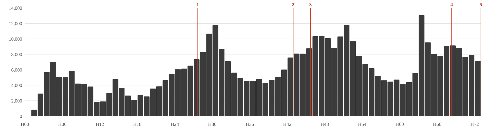
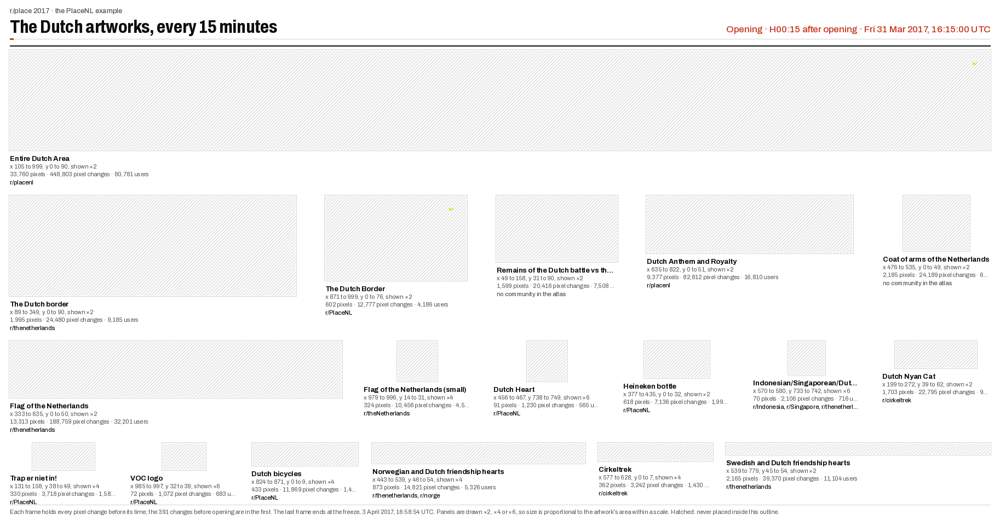
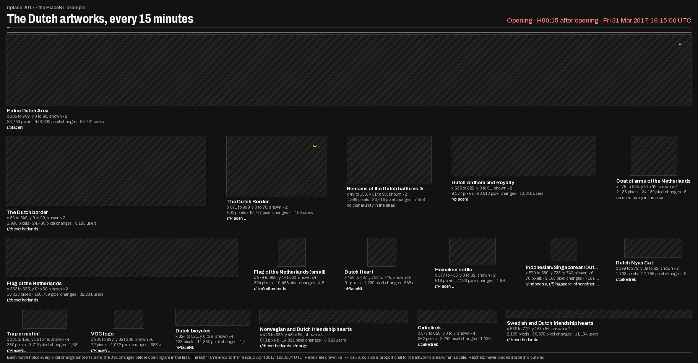
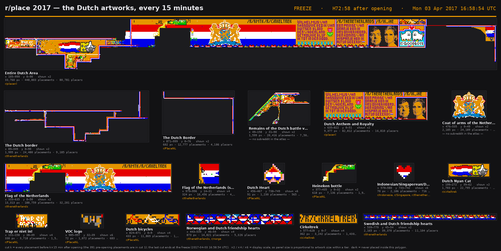
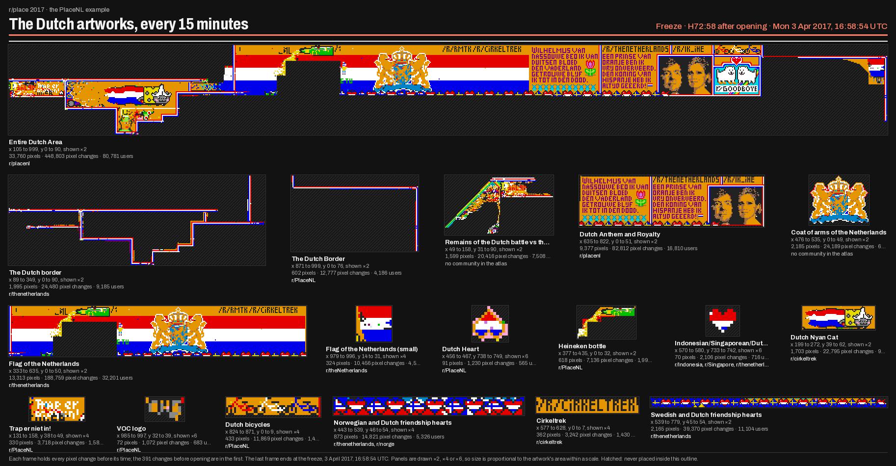

r/PlaceNL: the record
- Community
- r/PlaceNL, founded for the event to coordinate the Dutch artworks
- Posts and comments
- 701 in the coders' window; first post at H27:40; none in the week before
- Artworks
- eight in the atlas, the largest the Entire Dutch Area (33,760 pixels)
- Pixel changes
- 450,680 inside its artworks; 3.9% by accounts that posted in r/PlaceNL
The Dutch area was built by many communities, and r/PlaceNL joined it on the second day. Its record starts with a post calling itself the official coordination. Most hands that built the area left no post in the community that claimed it.
In detail
Everything the run recorded for r/PlaceNL at this stage. Long material is folded; each fold says what it holds.
The Dutch area, hour by hour

- 1 first post in the record, H27:40
- 2 border around Goodboye, H42:57
- 3 the new plan: fill the left with orange, H45:43
- 4 canal houses planned, H68:19
- 5 placing stops, H73
Placements per hour inside r/PlaceNL’s eight atlas polygons. The bars start before the community’s record: the Dutch area was built by many communities, and r/PlaceNL only joined it on the second day. The figure counts what landed in the region, not what the community’s writers placed.
| Artwork in the atlas | Area, px | Placements | Its own | Placers |
|---|---|---|---|---|
| Entire Dutch Area | 33,760 | 448,803 | 15,618 | 80,781 |
| Dutch Anthem and Royalty | 9,377 | 82,812 | 70,156 | 16,810 |
| The Dutch Border | 602 | 12,777 | 12,583 | 4,186 |
| Dutch bicycles | 433 | 11,869 | 11,869 | 1,434 |
| Heineken bottle | 618 | 7,136 | 6,985 | 1,996 |
| Trap er niet in! | 330 | 3,718 | 3,612 | 1,580 |
| Dutch Heart | 91 | 1,230 | 1,230 | 565 |
| VOC logo | 72 | 1,072 | 1,072 | 683 |
“Its own”: placements in the smallest polygon that holds them. The Entire Dutch Area is an umbrella: 448,803 placements fall inside it, 15,618 of them its own. The atlas is an outcome, never evidence of what the community meant.
The Dutch area, replayed
Rebuilt on 30 October 2026 from the public pixel record, in this site’s style: 292 fifteen-minute cuts, ending at the freeze. Hatched pixels were never placed inside an artwork’s outline. Download the replay (dark version).
Opening and final frames




The eighteen Dutch-area artworks in 15-minute cuts from the opening to the freeze at H72:58, the Entire Dutch Area as its own row, the others packed in proportion (Layer B, NLD2/figures). The still is the freeze.
r/PlaceNL: introduction and the five stages · How this stage works